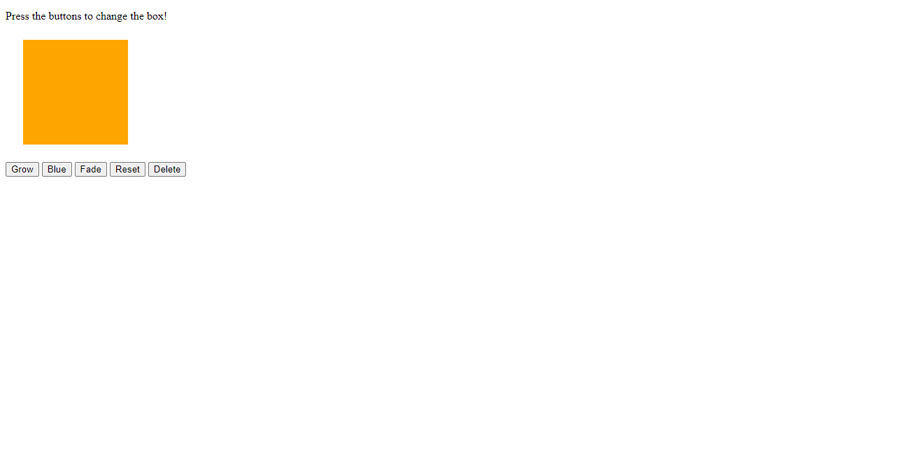

I am originary from Tamaulipas, Mexico, where I graduated with a Bachelor's degree in International Relations
from the Autonomous University of Tamaulipas, in 2007. In 2009, I was hired by the Mexican government to work at
the Mexican Consulate in Salt Lake City, Utah. After working there for 8 years I decided to quit in order to take care of my first son.
Then, I realized I needed to find a job that would give me flexible hours and the opportunity to work from home.
A few months later, I found a remote job in a paralegal firm, where I worked for almost 4 years.
At the beginning of 2022, I decided to start a new chapter in my career and enrolled into the Computer Science program at Salt Lake Community College.
However, I realized it would take a long time in order to get my Bachelor's Degree in Computer Science as a part-time student.
Because of that, I enrolled into the Coding Boot Camp to introduce myself in the industry at a faster pace.
Application used as a platform to know more about Utah outdoors

Backstreet Boys Fan Page
